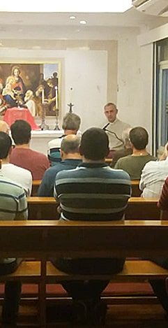
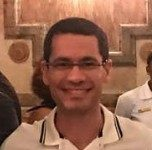
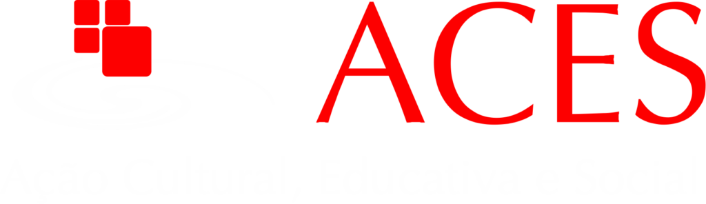

Acadêmica e profissional
Conhecer bem o que já foi feito e os desafios atuais para ir além, como profissional e cidadão.
Saiba mais →Lugar de crescimento e aprendizado para o desenvolvimento profissional, acadêmico, humano e espiritual.
O Centro Cultural Boa Viagem oferece formação humana integral para rapazes, ajudando-os no crescimento cultural e profissional e na relação com Deus. Para estimular o espírito de serviço e de amizade, também promovemos trabalhos sociais e momentos de lazer.
A ideia que sustenta todo o trabalho do centro veio de São Josemaria Escrivá, fundador do Opus Dei.
Mais informações
Conhecer bem o que já foi feito e os desafios atuais para ir além, como profissional e cidadão.
Saiba mais →
Concentração, trabalho em equipe, inteligência emocional e uma visão ampla da vida e do mundo.
Saiba mais →
Orientação espiritual a cargo do Opus Dei, para quem se interessar, com meditações e cursos.
Saiba mais →Atividades semanais e mensais. Cada um participa das que quiser.
Ajuda para melhorar o estudo, o rendimento e a preparação para a profissão.
Saiba mais →Fotos, avisos e novidades no Instagram e vídeos no YouTube.
Seguir @centroboaviagem no Instagram
“A época de vestibular sempre é desafiadora para qualquer estudante. Foi nesse contexto que conheci o CCBV, que muito me ajudou a criar hábito de estudo e a conciliar as áreas da minha vida.”Rafael, cientista

“Quando conheci o CCBV, eu buscava um lugar onde pudesse ser bem orientado. Passava por algumas dificuldades na parte profissional, e o pessoal que encontrei muito me ajudou a superar esse momento.”Marcelo, médico
“O Centro Cultural é um lugar fantástico: um ambiente de estudo com uma atmosfera acolhedora e de melhoria contínua. Cada um que o frequenta está em busca da melhor versão de si, e isso nos contagia.”Robson, web designer

O CCBV é mantido pela ACES, associação civil sem fins lucrativos. Em seus centros culturais e universitários desenvolvem-se atividades culturais, esportivas, artísticas, conferências, estudos extracurriculares e voluntariado, fomentando liberdade, responsabilidade, dedicação aos estudos, amizade e cidadania.